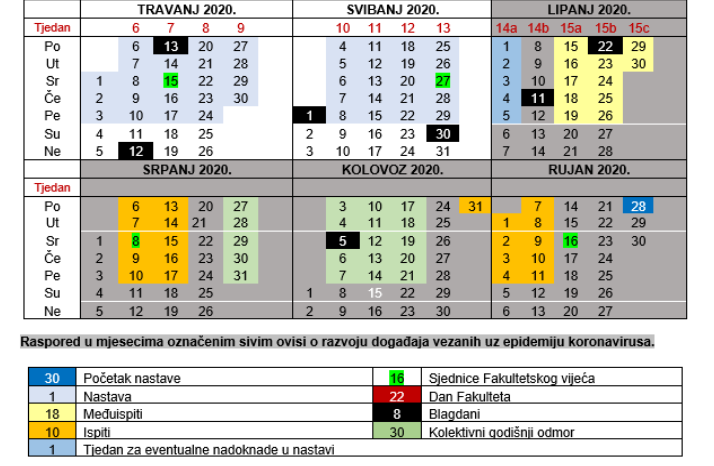

Kushim Ne, iduci tjedan i tjedan poslije namijenjeni su za nadoknade labosa po potrebama predmeta, pise negdje, a i u onom izmijenjenom kalendaru ak.god. je vidljivo naznaceno 2 tjedna “rupe” (tam je doduse samo jedan tjedan al koriste se oba koliko sam primijetila). Jedini ispit za koji znam da je prije starih termina su baze 08.06. pa je bio outlash oko tog, i sam Pineo je spomenuo da mu nije jasno zasto su ranije ostavili ili nesto tako kad su ZI sluzbeno od 15.06. Ima rasprava zakopana negdje u spamu il mozda OCRT-u, a ovo za slaganje rasporeda je Pineo napisao nedavnije u OCRT. 😅
Evo link na post Pineo
Evo kal.ak.god
